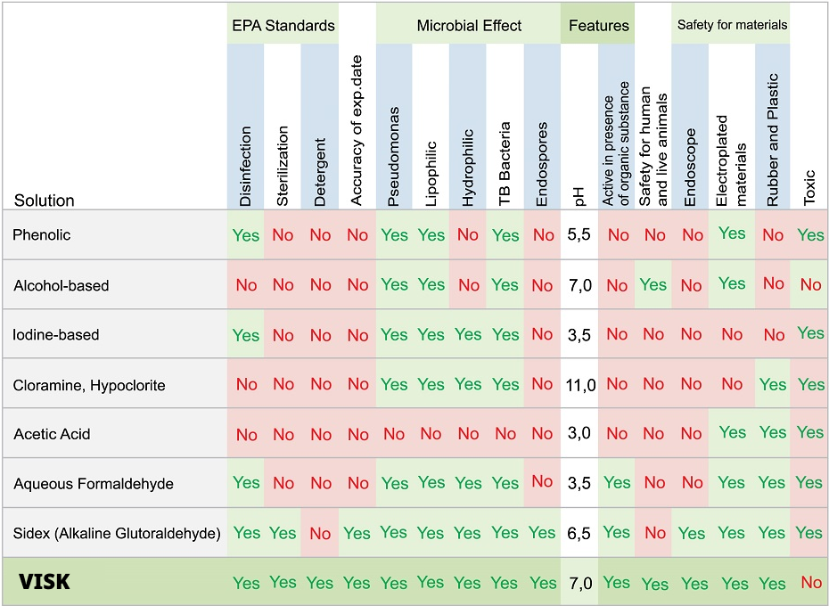

VISK, our personal hygiene solution, offers a range of environmentally friendly and consumer-friendly disinfectants. These products are non-toxic, with a neutral pH, ensuring no health risks and eliminating the need for rinsing after use.
100% Natural
Skin Friendly
Kills Bacteria
Removes odor
Dermatologically tested
PH Neutral
No Health Risk
Non Toxic
Eco Friendly
Use VISK at home or on the go! VISK can be used for multiple skin problems, here a few.
VISK is formulated as a Naturally Oxidized Anolyte solution based on Hypochlorous Acid (HOCl) and other oxidizing radicals. This powerful and natural disinfectant acts rapidly and has a prolonged effect. Its creation involves specific electrochemical conditions using water, salt (NaCl), and electricity, resulting in a solution with a neutral pH and high Oxidation-Reduction Potential (ORP). This potent formula targets various microorganisms such as bacteria, viruses, fungi, spores, and molds. The mechanism of action involves irreversible damage to the essential functions of microorganisms at the electron transmission level. This process effectively eliminates a broad spectrum of microorganisms without harming human tissues or other multi-cellular organisms. Importantly, VISK rapidly degrades into salt and water under environmental conditions, leaving no ecological footprint. VISK is proudly crafted from 100% natural ingredients, emphasizing our commitment to wellness and sustainability.
